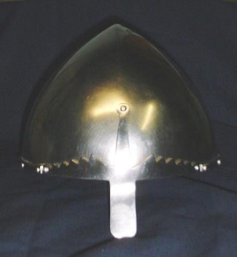
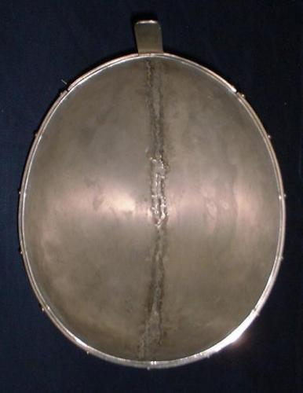

Conical Helmet (10th - 13th century)



Conical Helmet (10th - 13th century)
I would build this helmet in the following order:
1) Cut out the two halves of the helmet plus the nasal and
a 5/16" wide rib stop (the band that goes around the bottom edge).
2) Dish and shape the top halves. (Read the FAQ
for instructions on dishing this type of top)
3) Weld the top halves together.
4) Grind weld flush on the outside and cleanup weld on
the inside if needed.
5) Finish the bottom edge and polish the helmet.
6) Punch the mounting holes in the nasal and rib stop then
finish all the edges on them and polish them.
7) Rivet the nasal onto the helmet and then the rib stop.
Copyright 1999 Craig W. Nadler All rights reserved